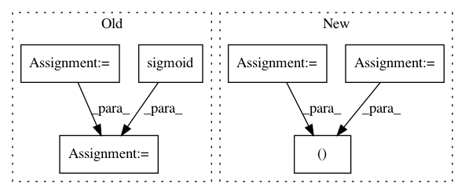

22e98420bbd9c5a082c894d2df02ae0dbd41846d,torch_geometric/nn/models/autoencoder.py,GAE,eval,#GAE#Any#Any#Any#,79
Before Change
pos_y = adj.new_ones(edge_index.size(1))
neg_y = adj.new_zeros(neg_edge_index.size(1))
adj = torch.sigmoid(adj.detach())
pos_pred = adj[edge_index[0], edge_index[1]]
neg_pred = adj[neg_edge_index[0], neg_edge_index[1]]
y = torch.cat([pos_y, neg_y], dim=0).cpu()
pred = torch.cat([pos_pred, neg_pred], dim=0).cpu()
roc_score = roc_auc_score(y, pred)
ap_score = average_precision_score(y, pred)
return roc_score, ap_score
After Change
neg_y = z.new_zeros(neg_edge_index.size(1))
y = torch.cat([pos_y, neg_y], dim=0)
pos_pred = self.decode_for_indices(z, pos_edge_index, sigmoid=True)
neg_pred = self.decode_for_indices(z, neg_edge_index, sigmoid=True)
pred = torch.cat([pos_pred, neg_pred], dim=0)
y, pred = y.detach().cpu().numpy(), pred.detach().cpu().numpy()
return roc_auc_score(y, pred), average_precision_score(y, pred)
In pattern: SUPERPATTERN
Frequency: 3
Non-data size: 6
Instances
Project Name: rusty1s/pytorch_geometric
Commit Name: 22e98420bbd9c5a082c894d2df02ae0dbd41846d
Time: 2019-03-20
Author: matthias.fey@tu-dortmund.de
File Name: torch_geometric/nn/models/autoencoder.py
Class Name: GAE
Method Name: eval
Project Name: rusty1s/pytorch_geometric
Commit Name: f6532b3c4c329e6d5d5fb846acc441df47616c4c
Time: 2020-03-22
Author: matthias.fey@tu-dortmund.de
File Name: torch_geometric/nn/models/gnn_explainer.py
Class Name: GNNExplainer
Method Name: explain_node
Project Name: stanfordnlp/stanza
Commit Name: fcea9fee573e854177b4b9af1cfd1b20029ed21e
Time: 2018-10-11
Author: qipeng@users.noreply.github.com
File Name: models/common/char_model.py
Class Name: CharacterModel
Method Name: forward